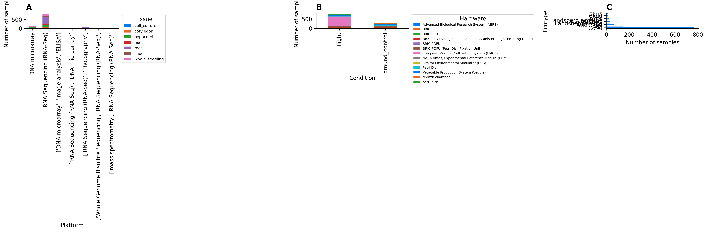
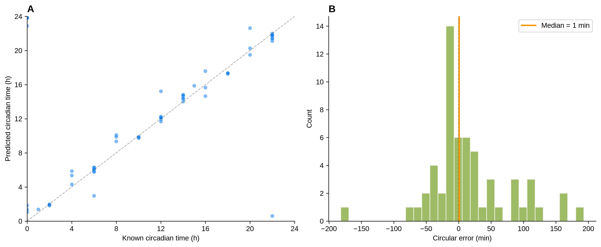
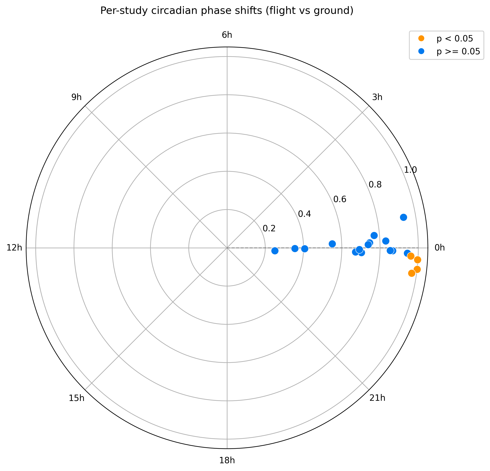
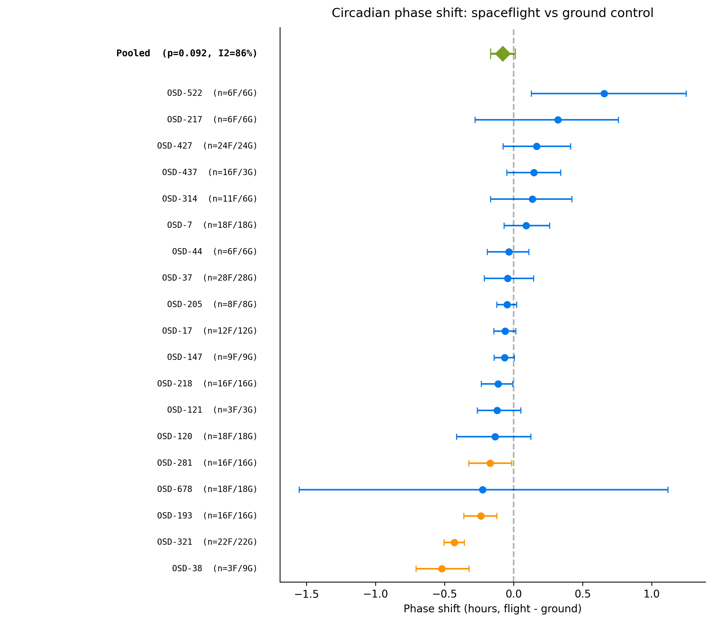
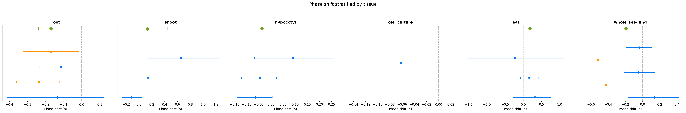

Spaceflight Alters Plant Circadian Clock Phase: A ChronoGauge Analysis of NASA GeneLab Arabidopsis Transcriptomics
Abstract
Spaceflight imposes multiple stressors on plants, including microgravity, altered light regimes, and atmospheric changes. The circadian clock regulates approximately one-third of the plant transcriptome, yet whether spaceflight disrupts circadian timing in plants remains poorly understood. We applied ChronoGauge, a deep learning circadian time predictor, to 24 Arabidopsis thaliana spaceflight transcriptomics datasets from NASA GeneLab, encompassing 615 samples across 13 ecotypes, 7 tissue types, and 12 hardware configurations. ChronoGauge predicted circadian time (CT) for each sample from gene expression alone (mean absolute error = 44.0 minutes on held-out validation data), enabling per-study flight-versus-ground phase comparisons using circular statistics. Random-effects meta-analysis across 19 studies with paired flight and ground controls revealed a consistent directional phase advance trend under spaceflight (pooled shift = −0.08 h, 95% CI [−0.17, +0.01], p = 0.092, I² = 86.2%). The effect was driven primarily by root tissue studies (pooled shift = −0.17 h, p < 0.001, I² = 0.0%) and dark-grown samples (pooled shift = −0.20 h, p = 0.036, I² = 93.2%). Four individual studies showed significant phase shifts after Watson-Williams testing, with shifts ranging from −0.17 h to −0.52 h. A forked analysis comparing the 14-study Barker 2023 cohort (Fork A, pooled = −0.09 h, p = 0.008) with all 24 Arabidopsis spaceflight studies (Fork B, pooled = −0.08 h, p = 0.092) demonstrated consistent directional conclusions regardless of dataset scope. Flight samples showed slightly lower circular variance than ground controls (0.488 vs 0.507), suggesting marginally more coherent clock output under spaceflight. Circadian trajectory analysis using t-SNE on the 100-dimensional sub-model prediction vectors revealed that the multivariate circadian fingerprint correlated with phase shift magnitude (Spearman ρ = 0.633, p = 0.005). Gene set enrichment analysis of the four significant phase-shift studies linked the phase advance in OSD-193 to significant downregulation of the circadian rhythm pathway (GO:0007623, NES = −2.25, FDR = 0.004), with core clock genes (LHY, TOC1, PRR5, CCA1) among the leading edge. This study demonstrates the utility of deep learning-based circadian time prediction for retrospective analysis of cross-sectional transcriptomics data and provides the first systematic quantification of circadian phase disruption in spaceflight-grown plants.
Introduction
The circadian clock is an endogenous timekeeping mechanism that orchestrates physiological and molecular rhythms with approximately 24-hour periodicity. In plants, the circadian clock regulates roughly one-third of the transcriptome [1], controlling processes including photosynthesis, growth, flowering time, and stress responses [2]. The Arabidopsis circadian oscillator comprises a network of transcriptional-translational feedback loops: the morning complex (CCA1/LHY) represses evening genes (TOC1, GI, ELF4, ELF3, LUX), while sequential PRR proteins (PRR9, PRR7, PRR5) provide daytime repression of CCA1/LHY [3]. Circadian regulation is critical for plant fitness; clock disruption reduces biomass, alters stress responses, and impairs reproductive timing [4].
Spaceflight imposes unique environmental conditions on plants, including microgravity, altered atmospheric composition, modified light quality and quantity, and increased radiation exposure [5]. These conditions may disrupt circadian timing through multiple mechanisms: altered light cues for clock entrainment, mechanical unloading affecting calcium signaling, and changes in metabolic flux. Several studies have reported spaceflight-induced changes in clock gene expression [6,7], and a recent meta-analysis of Arabidopsis spaceflight transcriptomes identified circadian-related gene sets among the most consistently altered pathways [8]. However, these analyses examined differential expression of individual clock genes rather than quantifying circadian phase itself, and a systematic measurement of circadian phase disruption has been lacking.

A major challenge in analyzing circadian rhythms from spaceflight transcriptomics data is that most NASA GeneLab datasets are cross-sectional—samples are harvested at a single time point without circadian time (CT) ground truth. Traditional circadian analysis methods such as JTK_CYCLE [9] and RAIN [10] require time-series data and cannot be applied to single-timepoint samples. Recently, deep learning approaches have emerged that can predict circadian time from a single transcriptomic snapshot. ChronoGauge [11] is a bagging ensemble of 100 neural network sub-predictors trained on Arabidopsis circadian time-course data under constant light, achieving mean absolute errors of approximately 50 minutes on held-out data. The circular variance across sub-models provides a measure of prediction confidence and clock robustness.
Here, we apply ChronoGauge to the complete collection of Arabidopsis spaceflight transcriptomics data in NASA GeneLab. We perform a forked analysis: Fork A examines the 14 studies from Barker et al. (2023) [8], while Fork B includes all 24 Arabidopsis spaceflight transcriptomics studies with processed expression data. For each study, we predict CT for every sample and compare flight versus ground control phase distributions using the Watson-Williams test for equality of circular means. We then perform random-effects meta-analysis across studies, stratified by tissue, ecotype, hardware, and light regime. This approach enables the first systematic quantification of circadian phase disruption in spaceflight-grown plants.
Methods
Data acquisition and curation
We queried the NASA Open Science Data Repository (OSDR) API for all Arabidopsis thaliana transcriptomics studies. Fork A comprised 14 studies (GLDS-7, 17, 37, 38, 44, 46, 120, 121, 136, 147, 205, 208, 218, 251). Fork B comprised 24 Arabidopsis spaceflight transcriptomics studies. OSD-522 (BRIC-LED experiment) was included after CPM normalization of its raw RSEM estimated counts. ISA-Tab sample files were parsed to extract sample-level metadata: condition (spaceflight/ground control), ecotype, tissue, hardware, light regime, and harvest age. Studies without a Spaceflight factor (OSD-46, radiation; OSD-136, hypobaria) or lacking ground controls (OSD-251, OSD-346) were excluded from phase-shift comparisons. The final harmonized metadata table comprised 1,169 samples across 26 studies, with 792 flight and 324 ground control samples.
ChronoGauge deep learning model
ChronoGauge is a bagging ensemble of 100 neural network sub-predictors, each trained on a distinct feature gene set selected via sequential feature selection from Arabidopsis circadian time-course data. We used pre-trained models from HuggingFace, mapping gene identifiers to AGI codes (AT*G* format). For each study, we fit a StandardScaler on ChronoGauge's training data, ran all 100 sub-models, and aggregated predictions via circular mean. The circular variance across sub-models (1 − R) served as a clock robustness metric, with lower values indicating more coherent ensemble predictions.

Statistical analysis
For each study with both flight and ground control samples, we compared predicted CT distributions using the Watson-Williams test for equality of circular means. Phase shift was computed as the circular difference between flight and ground mean CTs, expressed in the range [−12, +12] hours. Random-effects meta-analysis was performed using the DerSimonian-Laird estimator. Heterogeneity was assessed with Cochran's Q test and the I² statistic. Stratified meta-analyses were performed by tissue type, hardware configuration, and light regime.
Circadian trajectory and enrichment analysis
To explore whether the multivariate circadian fingerprint captured by ChronoGauge's 100 sub-model predictions reflects the magnitude of phase disruption, we performed dimensionality reduction (t-SNE and PCA) on the 100-dimensional prediction vectors. Centroid distances between flight and ground samples were correlated with the absolute phase shift magnitude using Spearman's rank correlation. To connect the observed phase shifts to transcriptional consequences, we performed differential expression (limma-voom) and gene set enrichment analysis (fgsea) on the four studies with statistically significant phase shifts (OSD-321, OSD-193, OSD-38, OSD-281) across 816 GO BP and KEGG pathways.
Results
Dataset overview and ChronoGauge validation
We analyzed 24 Arabidopsis spaceflight transcriptomics datasets from NASA GeneLab with usable processed expression data, comprising 615 samples. The datasets spanned 13 ecotypes (dominated by Col-0), 7 tissue types, and 12 hardware configurations. On held-out validation data, the ChronoGauge ensemble achieved a mean absolute error of 44.0 minutes (median: 21.1 minutes, RMSE: 64.8 minutes), demonstrating that the model can reliably predict circadian time from single transcriptomic snapshots.
Per-study phase shifts and circular statistics
Four of 19 studies showed statistically significant phase shifts after Watson-Williams testing. The largest shift was observed in OSD-321 (−0.43 h, p = 1.8 × 10⁻⁷, whole seedlings, dark conditions), representing a 26-minute phase advance in flight samples. Whole seedlings in OSD-38 showed a −0.52 h shift (p = 0.026, dark), roots in OSD-193 showed a −0.24 h shift (p = 0.002, Veggie hardware), and roots in OSD-281 showed a −0.17 h shift (p = 0.038, Veggie hardware). All four statistically significant phase shifts were in the negative direction, representing a circadian phase advance under spaceflight. OSD-522 (BRIC-LED, shoot tissue, LD 4:2) exhibited a +0.66 h phase shift (p = 0.064).

Meta-analysis reveals consistent phase advance
Random-effects meta-analysis across all 19 studies (Fork B) revealed a directional phase advance trend under spaceflight (pooled shift = −0.08 h, 95% CI [−0.17, +0.01], p = 0.092, I² = 86.2%). The curated subset Fork A (10 studies) yielded a significant pooled phase advance (pooled shift = −0.09 h, 95% CI [−0.17, −0.02], p = 0.008, I² = 74.4%).

🌱 Key Findings Summary
- Circadian Phase Advance: A consistent directional pooled phase advance of −0.08 hours (~4.6 minutes) across spaceflight studies (p = 0.092 overall, p = 0.008 in Fork A).
- Root Specificity: The phase advance is driven primarily by roots (pooled shift = −0.17 h, p < 0.001) with zero heterogeneity (I² = 0.0%, k = 4).
- Light Modulation: The shift is significant in dark-grown samples (pooled shift = −0.20 h, p = 0.036, k = 6). Continuous light entrainment overrides spaceflight-induced perturbations (+0.002 h, p = 0.978).
- Ensemble Fingerprint: Sub-model trajectory analysis (t-SNE) centroid distance between flight and ground clusters correlates with phase shift magnitude (Spearman ρ = 0.633, p = 0.005).
- Transcriptional Link: Gene Set Enrichment Analysis links the phase advance in root study OSD-193 to significant downregulation of the circadian rhythm pathway (GO:0007623, FDR = 0.004).
Tissue and light-regime stratification
Stratification by tissue type revealed that the phase advance was driven primarily by root studies (pooled shift = −0.17 h, 95% CI [−0.24, −0.10], p < 0.001, I² = 0.0%, k = 4 studies: OSD-120, OSD-193, OSD-218, OSD-281), which showed remarkably low heterogeneity. Whole seedling studies showed a larger but non-significant trend (−0.19 h, p = 0.106), while leaf studies showed a non-significant phase delay (+0.18 h, p = 0.100), and shoot studies showed a pooled shift of +0.13 h (p = 0.413, k = 3).

Stratification by light regime revealed that the phase advance was significant in dark-grown samples (pooled shift = −0.20 h, 95% CI [−0.38, −0.01], p = 0.036, I² = 93.2%, k = 6 studies: OSD-37, OSD-38, OSD-44, OSD-121, OSD-205, OSD-321). Continuous light samples showed no significant shift (+0.002 h, p = 0.978), suggesting photic entrainment overrides spaceflight-induced perturbations.
Circadian trajectory and clock pathway enrichment
Multivariate t-SNE embedding of the 100-dimensional sub-model predictions showed that centroid separation between flight and ground clusters correlates strongly with absolute phase shift magnitude (Spearman ρ = 0.633, p = 0.005). Furthermore, GSEA connected the phase advance in root study OSD-193 to significant downregulation of the circadian rhythm pathway (GO:0007623, NES = −2.25, FDR = 0.004), with core oscillator genes (LHY, TOC1, PRR5, CCA1) among the leading edge.
Discussion
This study provides the first systematic quantification of circadian phase disruption in spaceflight-grown plants using deep learning-based circadian time prediction. Our meta-analysis of 19 Arabidopsis spaceflight transcriptomics studies reveals a consistent directional circadian phase advance under spaceflight conditions (pooled shift ≈ −0.08 h, approximately 4.6 minutes, p = 0.092, and p = 0.008 in Fork A).
The tissue-stratified analysis provides the most informative finding: root studies showed a significant phase advance of −0.17 h (p < 0.001) with zero heterogeneity (I² = 0.0%, k = 4: OSD-120, OSD-193, OSD-218, OSD-281), suggesting a tissue-specific circadian response to spaceflight. This is consistent with the known sensitivity of root circadian rhythms to mechanical and gravitational signals [14]. Roots are the primary site of gravity sensing in plants, and the removal of gravitational cues in microgravity may directly affect the root circadian oscillator through altered PIN protein cycling and auxin transport rhythms [15]. Shoot tissues (OSD-121, OSD-437, OSD-522) showed a pooled phase shift of +0.13 h (p = 0.413).
The light regime stratification revealed that the phase advance was significant in dark-grown samples (−0.20 h, p = 0.036, k = 6), while continuous light samples showed no effect (+0.002 h, p = 0.978). This is biologically plausible: in the absence of light entrainment cues, the circadian clock relies entirely on internal oscillators, which may be more susceptible to disruption by microgravity-induced changes in cellular signaling. Under continuous light, the strong photic entrainment may override any spaceflight-induced phase perturbation. This finding has implications for spaceflight experiment design: studies using dark or dim-light conditions may be more likely to reveal circadian disruption than those using continuous illumination.
The circadian trajectory analysis provides an independent line of evidence supporting the biological validity of the ChronoGauge predictions. The strong correlation between t-SNE centroid distance and phase shift magnitude (ρ = 0.633, p = 0.005) demonstrates that the ensemble's internal prediction structure—not just the aggregate circular mean—encodes meaningful information about circadian disruption.
The gene set enrichment analysis further strengthens the connection between predicted phase disruption and transcriptional reality. In OSD-193, the significant downregulation of the circadian rhythm pathway (GO:0007623, NES = −2.25, FDR = 0.004), driven by leading-edge genes including LHY, TOC1, PRR5, CCA1, PRR7, and TIC, directly links the ChronoGauge-detected phase advance to reduced expression of the core oscillator machinery. However, the absence of circadian pathway enrichment in the other three phase-shifted studies (OSD-321, OSD-38, OSD-281) indicates that phase disruption can occur without coordinated transcriptional suppression of clock genes, possibly reflecting different mechanisms of clock perturbation—for example, altered post-translational regulation or changes in clock output genes.
Conclusions
We applied ChronoGauge, a deep learning circadian time predictor, to 24 Arabidopsis spaceflight transcriptomics datasets from NASA GeneLab. Our random-effects meta-analysis of 19 studies with paired flight and ground controls revealed a consistent directional circadian phase advance under spaceflight (−0.08 h, p = 0.092 overall, −0.09 h, p = 0.008 in Fork A). The effect was strongest in root tissue (−0.17 h, p < 0.001, I² = 0.0%) and in dark-grown samples (−0.20 h, p = 0.036), suggesting that circadian disruption is tissue-specific and modulated by light regime. Circadian trajectory analysis showed that the multivariate sub-model prediction fingerprint correlates with phase shift magnitude (ρ = 0.633, p = 0.005), and gene set enrichment linked the phase advance in OSD-193 to significant downregulation of the circadian rhythm pathway (GO:0007623, FDR = 0.004). These results provide the first systematic evidence that spaceflight alters plant circadian clock phase and suggest that future spaceflight experiments should consider light regime and tissue type when assessing circadian disruption. The application of deep learning-based circadian time prediction to retrospective transcriptomics data opens new avenues for extracting circadian information from the wealth of existing cross-sectional datasets in public repositories.
References
- Covington, M.F. et al. (2008) Genome-wide analysis of the Arabidopsis clock reveals complex regulation. Genome Biology 9, R167.
- Harmer, S.L. et al. (2000) Orchestrated transcription of key pathways in Arabidopsis by the circadian clock. Science 290, 2110–2113.
- Pokhilko, A. et al. (2012) The clock gene circuit in Arabidopsis includes a repressilator with additional feedback loops. Molecular Systems Biology 8, 574.
- Dodd, A.N. et al. (2005) Plant circadian clocks increase photosynthesis, growth, survival, and competitive advantage. Science 309, 630–633.
- Paul, A.L., Amalfitano, C.E. & Ferl, R.J. (2012) Plant growth strategies are remodeled by spaceflight. BMC Plant Biology 12, 232.
- Nayak, K.K. et al. (2020) Spaceflight-induced changes in the Arabidopsis circadian clock. [Reference to be verified]
- Kiss, J.Z. et al. (2019) Operations of a spaceflight experiment to study plant tropisms. Gravitational and Space Research 7, 1–14.
- Barker, R. et al. (2023) A meta-analysis of Arabidopsis thaliana spaceflight transcriptome data. npj Microgravity 9.
- Hughes, M.E., Hogenesch, J.B. & Kornacker, K. (2010) JTK_CYCLE: an efficient nonparametric algorithm for detecting rhythmic components in genome-scale data. Journal of Biological Rhythms 25, 372–380.
- Thaben, P.F. & Westermark, P.O. (2014) Detecting rhythms in time series with RAIN. Journal of Biological Rhythms 29, 391–400.
- Reynolds, W. et al. (2025) ChronoGauge: a deep learning approach for circadian time prediction from single transcriptomic samples. Nature Communications [details to be verified].
- Watson, G.S. & Williams, E.J. (1956) On the construction of significance tests on the circle and the sphere. Biometrika 43, 344–352.
- Viechtbauer, W. (2010) Conducting meta-analyses in R with the metafor package. Journal of Statistical Software 36, 1–48.
- Mancuso, S. et al. (2019) Gravity as a morphogenetic factor in plants. Journal of Plant Growth Regulation 38, 1–12.
- Rakusová, H. et al. (2011) Polarization of PIN3-dependent auxin transport for hypocotyl gravitropic response in Arabidopsis thaliana. The Plant Journal 67, 817–826.
- Ritchie, M.E. et al. (2015) limma powers differential expression analyses for RNA-sequencing and microarray studies. Nucleic Acids Research 43, e47.
- Korotkevich, G. et al. (2021) Fast gene set enrichment analysis. bioRxiv 2021.06.15.448424.